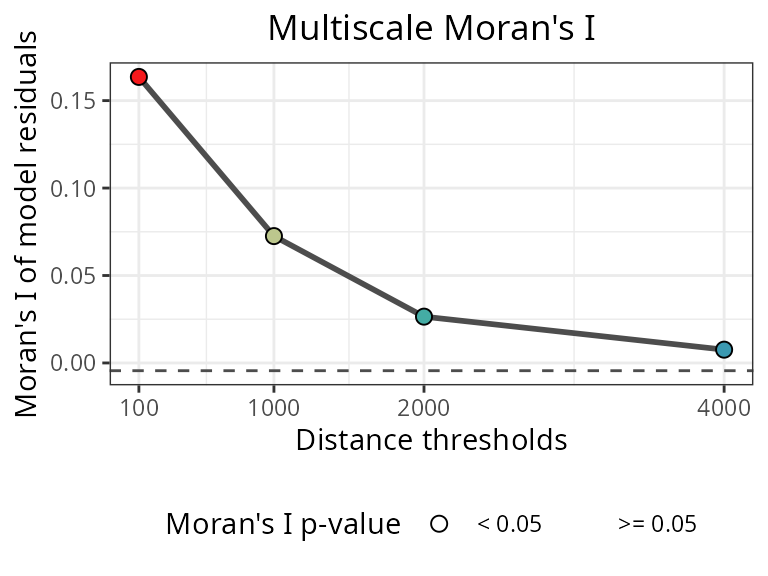
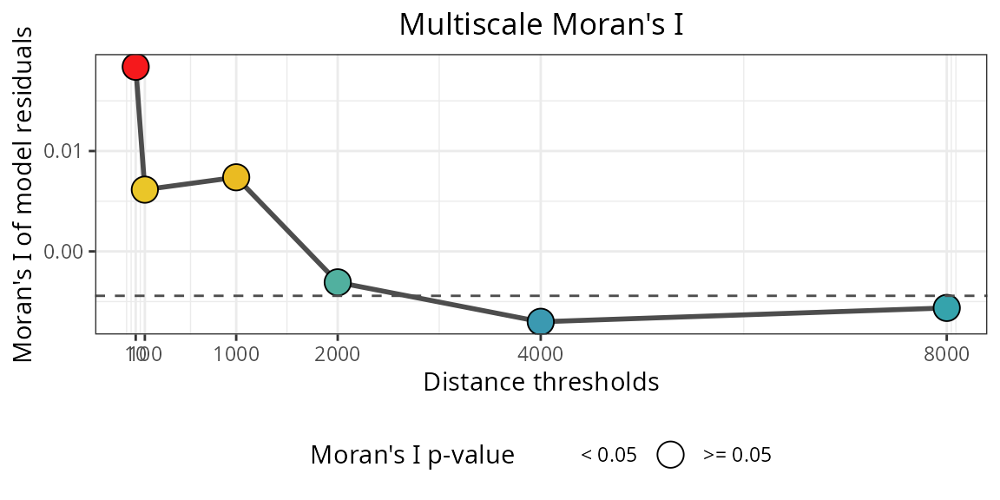
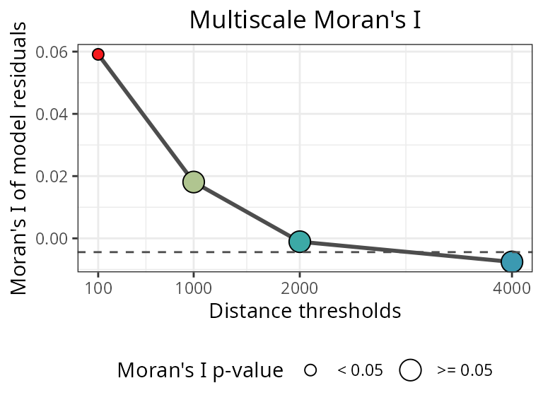
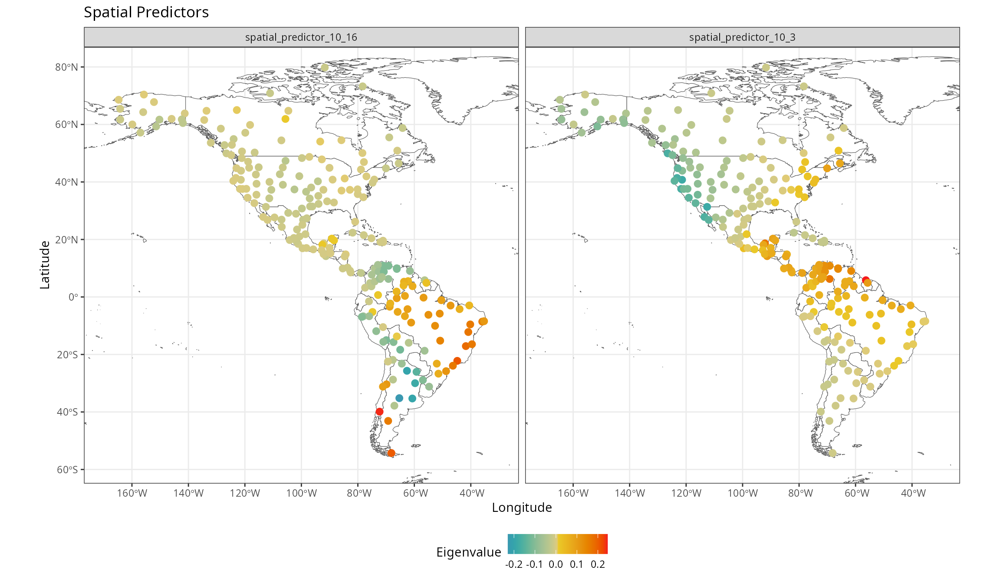
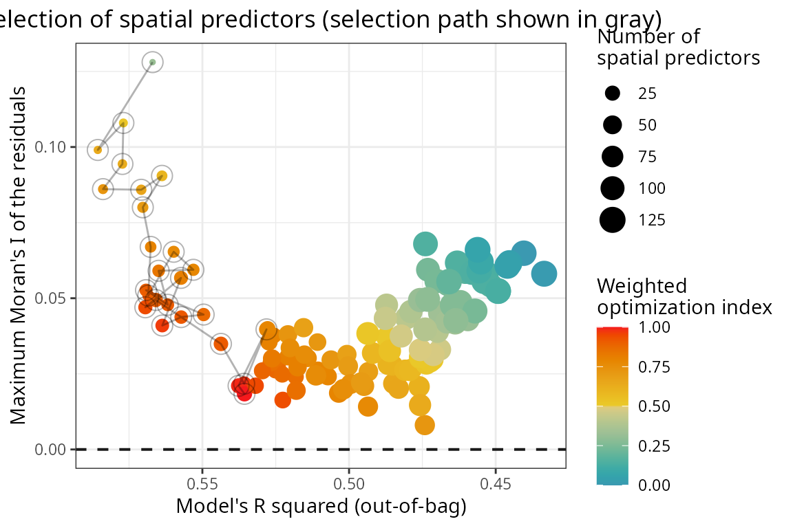
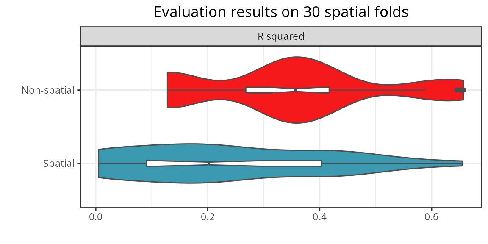
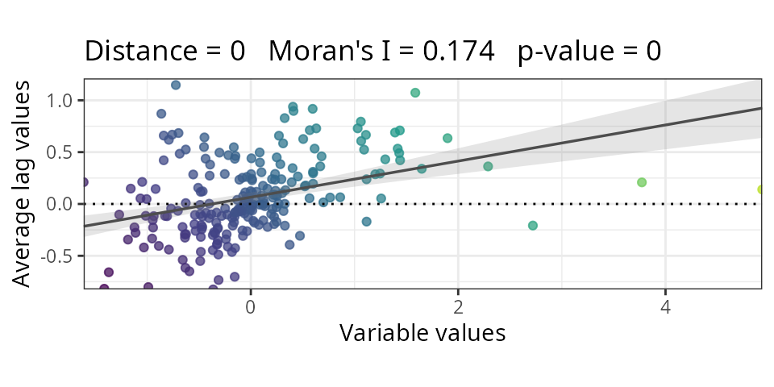
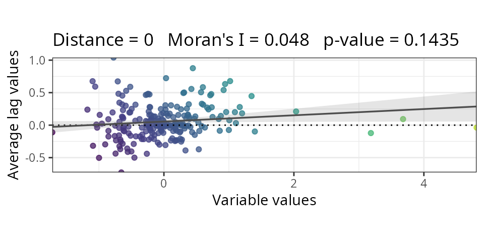

Introduction
This tutorial demonstrates how to address spatial autocorrelation in
random forest model residuals using the spatialRF package.
Spatial autocorrelation occurs when model residuals at nearby locations
are more similar than expected by chance, violating the assumption of
independence and potentially leading to inflated performance metrics and
biased variable importance scores.
The rf_spatial() function addresses this issue by
incorporating spatial predictors (Moran’s Eigenvector
Maps) that capture spatial structure not explained by environmental
predictors alone.
For an introduction to non-spatial random forest modeling with spatialRF, see the Non-Spatial Random Forest Models tutorial.
Setup
library(spatialRF)
library(ggplot2)
library(dplyr)
library(rnaturalearth)
library(rnaturalearthdata)
library(parallel)
library(patchwork)
library(tidyr)
# Load data and precomputed non-spatial model
data(
plants_df,
plants_response,
plants_predictors,
plants_distance,
plants_xy,
plants_rf # precomputed non-spatial model
)
#distance thresholds (same units as plants_distance, km)
#used to assess spatial correlation at different distances
distance_thresholds <- c(10, 100, 1000, 2000, 4000, 8000)
#a pretty color palette
colors <- grDevices::hcl.colors(
n = 100,
palette = "Zissou 1"
)
# Parallel backend
cluster <- parallel::makeCluster(
2, #parallel::detectCores() - 1,
type = "PSOCK"
)
# Load world map for visualizations
world <- rnaturalearth::ne_countries(
scale = "medium",
returnclass = "sf"
)Non-spatial vs spatial model
The plot below shows the spatial autocorrelation of of the residuals from a non-spatial model.
m.non_spatial <- spatialRF::rf(
data = plants_df,
dependent.variable.name = plants_response,
predictor.variable.names = plants_predictors,
distance.matrix = plants_distance,
distance.thresholds = distance_thresholds,
verbose = FALSE
)
spatialRF::plot_moran(
model = m.non_spatial,
verbose = FALSE,
point.color = colors
)
The spatial autocorrelation of the model residuals is high for neighborhood distances up to ~3000km
To reduce the spatial autocorrelation of the residuals as much as
possible, the non-spatial model can be transformed into a spatial
model with rf_spatial().
This function is the true core of the package!
m.spatial <- spatialRF::rf_spatial(
model = m.non_spatial,
cluster = cluster,
verbose = FALSE
)
spatialRF::plot_moran(
model = m.spatial,
verbose = FALSE,
point.color = colors
)
The residuals of the spatial model plotted above are not spatially correlated anymore!
This improvement results from adding spatial predictors to the model.
Spatial predictors
The variable importance plot below shows that the spatial model has spatial predictors with varying levels or importance.
spatialRF::plot_importance(
model = m.spatial,
verbose = FALSE,
fill.color = colors
)
Spatial predictors are named spatial_predictor_X_Y,
where X is the neighborhood distance at which the predictor
is generated, and Y is the index of the predictor.
| variable | importance |
|---|---|
| spatial_predictor_10_3 | 1045.043 |
| spatial_predictor_10_2 | 844.255 |
| spatial_predictor_10_5 | 770.861 |
| spatial_predictor_10_1 | 707.001 |
| spatial_predictor_10_4 | 638.946 |
| spatial_predictor_10_13 | 556.443 |
| spatial_predictor_10_10 | 477.876 |
| spatial_predictor_10_20 | 476.759 |
| spatial_predictor_10_8 | 468.989 |
| spatial_predictor_10_16 | 468.463 |
| spatial_predictor_2000_3 | 461.205 |
| spatial_predictor_10_15 | 446.738 |
| spatial_predictor_1000_11 | 426.185 |
| spatial_predictor_10_12 | 372.793 |
| spatial_predictor_10_17 | 357.319 |
| spatial_predictor_10_22 | 348.198 |
| spatial_predictor_10_14 | 337.736 |
| spatial_predictor_10_11 | 328.416 |
| spatial_predictor_10_21 | 306.931 |
| spatial_predictor_10_9 | 302.574 |
| spatial_predictor_10_7 | 299.491 |
| spatial_predictor_10_19 | 285.000 |
| spatial_predictor_10_18 | 264.969 |
| spatial_predictor_2000_6 | 258.225 |
| spatial_predictor_1000_9 | 244.433 |
| spatial_predictor_1000_10 | 220.619 |
Spatial predictors are smooth surfaces representing neighborhood among records at different spatial scales. They are computed from the distance matrix in different ways.
The ones computed by default in rf_spatial() are the
eigenvectors of the double-centered distance matrix of weights (a.k.a,
Moran’s Eigenvector Maps).
They represent the effect of spatial proximity among records, helping to represent biogeographic and spatial processes not considered by the non-spatial predictors.
They can be extracted from the model with the function
get_spatial_predictors().
spatial.predictors <- spatialRF::get_spatial_predictors(m.spatial)The map below shows a couple of them.

Selection of spatial predictors
The spatial predictors are included in the model sequentially via select_spatial_predictors_sequential().
This function finds the smallest subset of spatial predictors that
maximizes the model’s R squared and minimizes the Moran’s I of the
residuals.
spatialRF::plot_optimization(
model = m.spatial,
point.color = colors
) The path in the plot below shows the iterative selection of spatial predictors, that tries to reduce the spatial autocorrelation of the residuals (y axis) without degrading model performance (x axis).
Model comparison
The function rf_compare()
takes named list with models trained with the same data, and applies
rf_evaluate() to each one of them to compare their
predictive performances across spatial folds.
comparison <- spatialRF::rf_compare(
models = list(
`Non-spatial` = m.non_spatial,
`Spatial` = m.spatial
),
xy = plants_xy,
repetitions = 30,
training.fraction = 0.8,
fill.color = colors,
cluster = cluster,
metrics = "r.squared"
)
The comparison shows that the spatial model has a better performance
on when predicting on independent spatial folds. This is an expected
behavior: spatial predictors make models less transferable in space!
That’s why spatialRF is focused on explanatory models
rather than predictive ones.
Using spatial predictors in other models
Spatial predictors from spatialRF can be used with any
modeling method. The workflow: generate MEMs, rank by Moran’s I, add
sequentially until residual autocorrelation is resolved.
#generate and rank MEMs
mems <- spatialRF::mem_multithreshold(
distance.matrix = plants_distance,
distance.thresholds = distance_thresholds
)
ranked <- spatialRF::rank_spatial_predictors(
distance.matrix = plants_distance,
spatial.predictors.df = mems,
ranking.method = "moran"
)
mems <- mems[, ranked$ranking]
#prepare scaled data
plants_df.scaled <- plants_df |>
scale() |>
as.data.frame()
#fit non-spatial model
m1 <- lm(
richness_species_vascular ~ human_population + climate_bio1_average +
climate_hypervolume + human_footprint_average,
data = plants_df.scaled
)
#check autocorrelation
m1.moran <- spatialRF::moran(
x = residuals(m1),
distance.matrix = plants_distance,
verbose = FALSE
)
m1.moran$plot
Residuals show spatial autocorrelation. Let’s add MEMs sequentially:
#combine data with MEMs
plants_df.mem <- cbind(plants_df.scaled, mems) |> scale() |> as.data.frame()
#add MEMs until autocorrelation resolved
spatial_predictors <- character(0)
for(i in seq_along(mems)){
spatial_predictors <- c(spatial_predictors, names(mems)[i])
formula_i <- reformulate(
c(
"human_population",
"climate_bio1_average",
"climate_hypervolume",
"human_footprint_average",
spatial_predictors
),
response = plants_response
)
m2 <- lm(
formula = formula_i,
data = plants_df.mem
)
m2.moran <- spatialRF::moran(
x = residuals(m2),
distance.matrix = plants_distance,
verbose = FALSE
)
if(m2.moran$test$interpretation == "No spatial correlation") break
}
m2.moran$plot
Compare models:
| Model | Predictors | R2 | Moran_I |
|---|---|---|---|
| Non-spatial | 4 | 0.386 | 0.174 |
| Spatial | 24 | 0.494 | 0.048 |
Adding the spatial predictors eliminated autocorrelation while improving model fit.